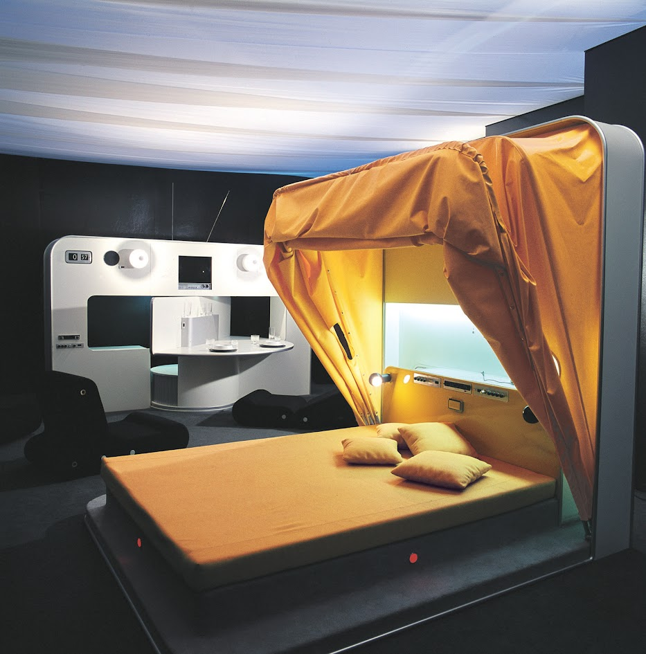
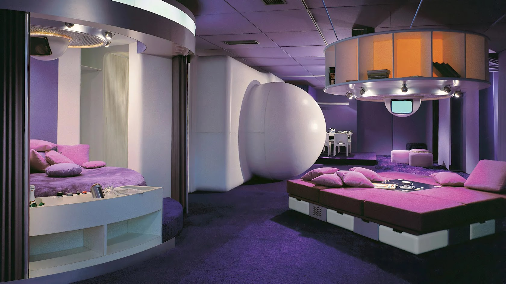

Ancora oggi, a quasi 50 anni dalla prematura scomparsa, i suoi oggetti sono considerati, per funzione, aspetto e tecnologia, assolutamente contemporanei; nel senso che rispondono ad una serie di esigenze del vivere attuale, legato alla mobilità, alla possibilità di trasformazione e al poco spazio disponibile, impensabile mezzo secolo fa.
